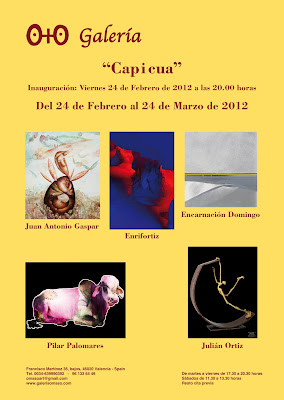

"Capicua": Inauguración 24 febrero de 2012 a las 20.00 h
domingo, 19 de febrero de 2012
{kind=link}

“CAP I CUA”
Del 24 de Febrero al 24 de Marzo de 2012
Inauguración viernes 24 de Febrero a las 20:00 horas
La Galería O+O de Valencia, bajo la dirección de Enriqueta Hueso, tiene el placer de presentarnos la muestra colectiva “CAP I CUA“. Una exposición multidisciplinar que cuenta con los trabajos de cinco artistas: Enrifortiz, Pilar Palomares, Encarnación Domingo, Juan Antonio Gaspar y Julián Ortiz Domínguez.
La muestra se compone de diferentes técnicas, soportes y artistas, que guardan algo en común: una particular visión de la realidad. Cada uno de ellos reflexiona con sus pinturas, fotografías o esculturas sobre su percepción de lo real. Ya sea mediante la abstracción, expresionismo o figuración todos ellos nos introducen en su realidad mental. Una reflexión íntima y personal de como el arte expresa sentimientos, sensaciones y emociones mediante la representación distorsionada de la realidad. A través de la manipulación de imágenes, símbolos, materiales y técnicas se crean modelos o representaciones de lo real, que permiten expresar, crecer, cambiar y disfrutar.
En esta conjugación de representaciones reales y mentales, objetivas y subjetivas, Enrifortiz se centra en la fugacidad y metamorfosis de la Naturaleza, haciéndola desaparecer a través de una explosión de color; Pilar Palomares juega con la descontextualización de las imágenes en busca de una nueva resignificación; Encarnación Domingo abstrae sus paisajes hasta transformarlos en una suerte de líneas y campos de color; Juan Antonio Gaspar nos introduce en un mundo perdido de personajes de ensueño; y Julián Ortiz Domínguez realiza una distorsión escultórica del cuerpo humano.
Óscar García García
ENRIFORTIZ
Enrique Fernández Ortiz, Enrifortiz, presenta un mundo repleto de matices, convertidos en impulsos encriptados, que retratan la fugacidad y metamorfosis de la Naturaleza. Matices de luz y color que simbolizan lo efímero de la vida, con sus miles de contrastes, gradaciones y sutiles tonos. Un lenguaje propio y personal, creado mediante el diálogo espontáneo entre pintura y fotografía; que nos habla del espacio interior y nos seduce con su fantasía.
Su experimentación con la luz y el color, donde ambos conversan entre sí, tiene como fruto una coreografía de gran carga visual. Una sinfonía de color que nos muestra un sinfín de sensaciones y sentimientos. Movimientos cromáticos que reflejan estados de ánimo, que van desde el relax al desasosiego. Tonos rojizos que con su calidez se enfrentan a los fríos azules, en una lucha de opuestos. Una batalla donde se produce un choque de materias sólidas y líquidas, mostrando como los diferentes pigmentos se fusionan, rechazan, solapan, rozan y abrazan. Fruto de este encuentro se crea un juego de contraposiciones acuosas y densas, de rapidez y lentitud, de calidez y frio, de luz y oscuridad… Impulsos armónicos que transforman un caos de color en una composición que la luz equilibra y estructura. Una luz que reparte, ordena, suaviza y enfatiza según las directrices emocionales.
Los impactantes efectos lumínicos y cromáticos logrados, que fusionan pintura y fotografía, son el resultado de una trabajada y depurada técnica, fruto de una selección y combinación de actividades plásticas como el óleo, acrílico, grabado, fusing “vidrio”, fotografía, etc.
Una investigación neoexpresionista donde el espacio pictórico es tratado con frontalidad y no hay jerarquía entre las distintas partes de la tela. Se ha eliminado la figuración y su tratamiento impetuoso y primitivo está determinado por el uso de colores contrastados. Un estilo que se presenta violento y enérgico pero siempre rodeado de una atmósfera poética donde todo fluye. Formas abstractas que explotan ante nosotros en un paisaje interior. Trazos violentos que se debaten entre la ternura y la violencia, el dramatismo y la sensualidad, el conflicto y la paz.
PILAR PALOMARES
La obra de Pilar Palomares muestra un trabajo cifrado que se compone a partir de símbolos e imágenes. Figuras, plantas, frutas, retratos... se combinan con signos, señales y logos creando composiciones diferentes. Una renovación de conceptos a través de la fusión de la fotografía y el arte digital.
Mensajes ocultos donde la naturaleza y lo artificial se unen de forma poética, con superposiciones y collages de imágenes. Representaciones sencillas y cotidianas que llegan directas hasta nosotros produciéndonos diferentes sensaciones y estímulos. En algunos casos son las imágenes impactantes las que llaman nuestra atención, en otros es la sutilidad con las que se mezclan, compaginan y crean estos juegos visuales la que nos atraen. Obras que ofrecen una segunda y tercera lectura, donde las imágenes se repiten, duplican, solapan, cambian de tonalidad y posición en busca de una reflexión profunda e interior.
Juega con nuestros sentidos y los estimula. La vista es la encargada de que percibamos la obra, que puede remitirnos al olfato con la representación de flores, al tacto por las texturas de los objetos o al olfato y gusto al mostrar comida. Trabajos que despiertan nuestros sentidos y reviven sensaciones tanto pasadas como futuras, al combinar varios elementos diferentes que producen algo nuevo en nuestro interior.
Los fondos utilizados pueden ser paisajes donde se recortan y flotan los motivos o simplemente se tornan negros y remarcan los contornos. De este modo, se dirige nuestra atención sobre la figura en la que se desea hacer hincapié. Los tonos oscuros que rodean estas figuras hacen resaltar el color y la importancia del objeto que ha sido descontextualizado para que cobre un nuevo significado. Poesías visuales llenas de imaginación que metamorfosean la realidad. Una forma de experimentar con la imagen y con su forma de trasmitir.
ENCARNACIÓN DOMINGO
Encarnación Domingo Martínez, Edomingo, nos introduce en el silencio de sus paisajes. Vistas de parajes de dunas y playas reducidos a su esencia, rodeados de una atmósfera de melancolía y ensoñación. Paisajes desnudos hasta el punto de tornarse en franjas que dividen los diferentes espacios: cielo, mar y tierra. Una esquematización de la Naturaleza que convierte los paisajes costeros en una suerte de abstracción y minimalismo. Una mirada más allá del horizonte donde el terreno, el agua y el aire se fusionan en uno y el ser humano empequeñece hasta desaparecer. El descubrimiento abstracto de la realidad.
La sutileza de los paisajes borra todo lo superfluo y trivial. Un estilo a caballo entre lo figurativo y lo abstracto, que presenta imágenes que quedan grabadas en nuestra mente a través de formas simples y reconocibles. Imágenes que viven ocultas en nuestros recuerdos y vuelven a nosotros al observar sus trabajos. Una visión parcial y contemplativa del horizonte, donde brotan emociones y sentimientos. Mirada sosegada y onírica que esconde una sensación de inquietud, de recuerdos olvidados vagamente que son transformados en franjas de luz.
En esta enigmática abstracción de la realidad, caracterizada por un gesto rápido y fluido que sigue directrices geométricas, juega un papel importante la técnica utilizada. Un trabajo basado en la degradación del aluminio que utiliza como soporte. Superficies lijadas, rasgadas y pulidas que forman líneas continuas y quebradas dando forma a superficies simples y serenas, de tonos grisáceos y metálicos. Pura geometría donde predomina lo horizontal y el tiempo queda suspendido.
Un paseo apacible por el interior de cada uno de nosotros a través de la memoria. Horizontes llenos de calidad atmosférica caracterizados por una belleza melancólica y espiritual, que nos hablan de esperanza, secretos, inquietudes y anhelos.
JUAN ANTONIO GASPAR
Un estilo propio y característico, hacen que las obras de Juan Antonio Gaspar sean fácilmente reconocibles. Un trabajo preciso y lleno de imaginación que nos transporta a un mundo de ensueño. Obras dotadas de una luminosidad delicada que acaricia las diferentes tonalidades. El color, cargado de luz, dibuja personajes y situaciones oníricas que desprenden originalidad e ingenio en sus temas y tratamiento. Reconstruye sueños creando un universo imaginario que muestra de forma poética su utopía interior.
Los diferentes personajes que pueblan las pinturas Juan Antonio combinan siluetas estilizadas y orondas, rompiendo los cánones establecidos. Cuerpos a modo de marionetas con un tronco voluminoso, pequeñas cabezas, ojos minúsculos y extremidades que se alargan y retuercen hasta convertirse en ramas de árboles. Composiciones protagonizadas por criaturas caracterizadas por una deformación que busca adentrarse en el mundo del subconsciente. Estos personajes que nacen, se fusionan o transforman en parte de la Naturaleza, son parte de un mundo perdido donde el entorno y el hombre son uno. Un mundo que tiene en nuestras reminiscencias, evocaciones y memoria su punto de partida.
Ilustraciones únicas de una realidad paralela, formadas y modeladas a través del color. El colorido define su obra emergiendo de sus figuras y paisajes con un brillo especial. La luz, los tonos utilizados y la combinación cromática enfatizan más aún ese mundo de los sueños representado. Óleos sobre lienzo que parecen suavizar la luz a través de un filtro. Un tratamiento delicado que exhibe un pincel suelto, espontáneo y vigoroso que evoca una vida de fantasías e ilusiones.
Una invitación a realizar un colorista viaje interior cercano a las ilustraciones infantiles y las viñetas de un comic. En el que un juego de insinuaciones, interpretaciones y paralelismos con la realidad nos dejaran apresados en su mundo atemporal.
JULIÁN ORTIZ DOMÍNGUEZ
El trabajo escultórico de Julián Ortiz Domínguez se centra principalmente en la representación del cuerpo humano. Pero se trata de una representación diferente, que muestra una realidad distorsionada. La utilización del bronce confiere a su producción una destacada calidad matérica y expresiva. Mediante la técnica de `a la cera perdida´, las piezas realizadas en matera blanda (cera) desaparecen al verterse sobre ellas el metal incandescente, petrificando y modelándose la pieza final, única e irrepetible. La expresiva piel de bronce de sus obras juega con su textura quebradiza y el color de la patina y el tiempo.
Las figuras en ocasiones representan acciones y movimientos enérgicos que quedan paralizados, mostrando toda la tensión del momento en su cuerpo. Mientras que en otras, los personajes se presentan de pie, estáticos y rígidos con los brazos pegados al cuerpo mirándonos fijamente. Figuras que expresan la subjetividad y fragilidad de sentido humano del tiempo y el espacio. Un estilo propio de figuras altamente expresivas, que cuenta con cuerpos que se estilizan hasta alagar sus extremidades. Personajes que se presentan con su cuerpo desnudo y desnudan su alma. Rostros que parecen hablarnos o gritarnos, en una plástica comunicativa de sentimientos y emociones.
La sensación de movimientos detenido en el tiempo y espacio está marcada por un equilibrio de quietud y movimientos violentos. Actividades equilibradas en las que las figuras bailan, dan la mano a su sombra o reposan ante nosotros inmóviles. Bronces melancólicos que con el alargamiento de sus extremidades aporta un dramatismo plástico inquietante.
El realismo y la percepción es la clave en la producción de Julián Ortiz Domínguez. Un realismo especial que en lugar de reproducir el parecido con sus modelos, trata de representar su percepción o realidad mental. Este cambio de percepción hace que se produzca un cambio de tamaño en el modelo en conjunto y en algunas de sus partes.